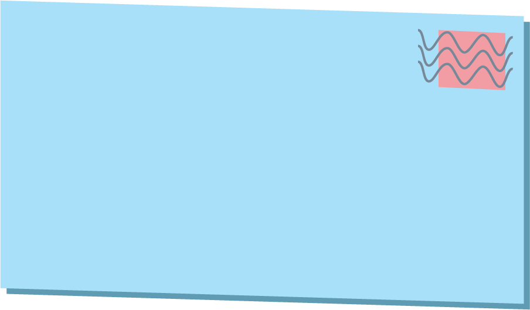

{# https://docs.djangoproject.com/en/2.1/ref/contrib/auth/ #}
{# use with syntax: {{ user.value }} #}
{#
This template has access to these objects: user, submissions_titles
user: username, email
submissions: all the submissions the user has made. Only the visible titles are passed to the template.
Access them like this:
{% for title in submissions_titles %}
{{ title }}
{% empty %}
displays if no submissions
{% endfor %}
#}
{% extends "base_generic.html" %}
{% block content %}
